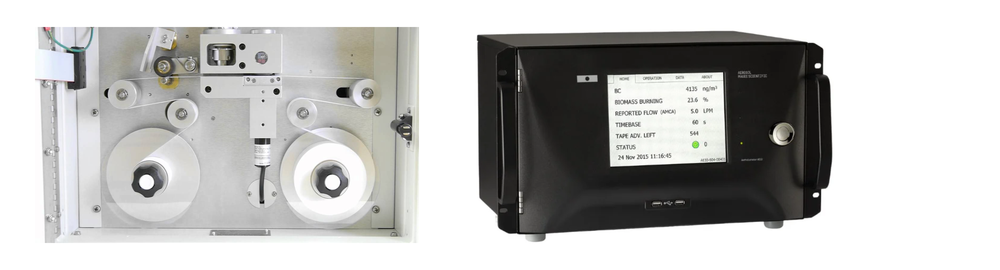
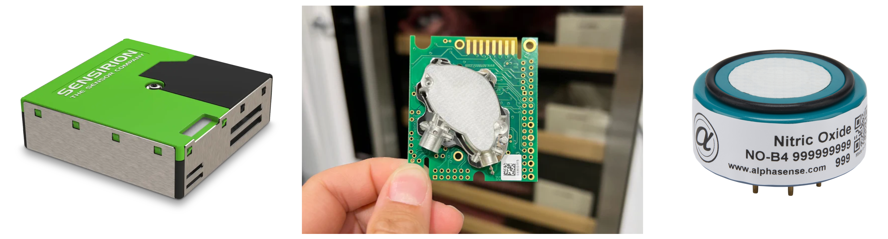
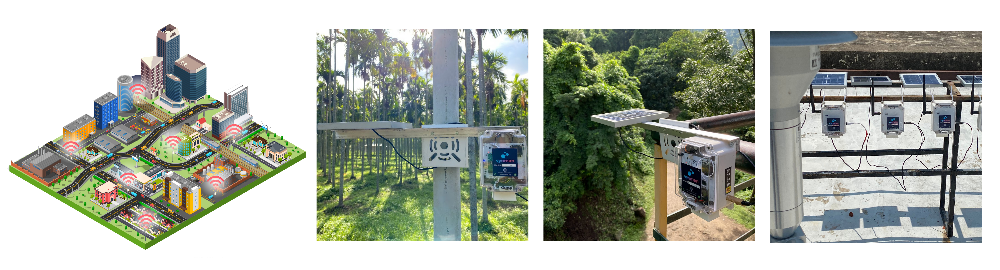
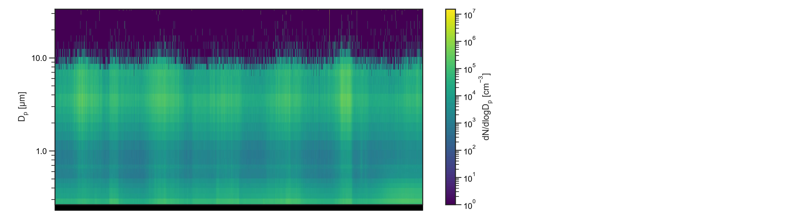

Research
My research interests are in the broad areas of Electronics and air quality, with a focus on:

1. Air quality instrumentation

2. Low-cost sensors.

3. Wireless sensor networks.

4. Personal exposure monitoring.

5. Aerosols.
Publications
Kumar, G., Kumar, D.P., Dhariwal, J. and Srirangarajan, S., 2025. Reliability assessment of low-cost PM sensors under high humidity and high PM level outdoor conditions. IEEE Sensors Journal.
Kumar, G., Kumar D, P., Raj, S., Dhariwal, J. and Srirangarajan, S., 2025. Impact of sampling frequency on low-cost PM sensor performance including short-term temporal events in high PM environments. Aerosol Research, 3(2), pp.429-439.
Gangrade, S., Vamsi, B., Prasannaa, Saran Raj, Dhariwal, J. (2023). Empirical Studies Assessing the CO2 Levels in Indoor Spaces. In: Chakrabarti, A., Singh, V. (eds) Design in the Era of Industry 4.0, Volume 1. ICORD 2023. Smart Innovation, Systems and Technologies, vol 343. Springer.
Talks
"Scope & Opportunities in Spectroscopy and its Applications", Department of Physics, SRCAS, 2022
"Rapid Prototyping", Department of Electronics, SRCAS, 2021